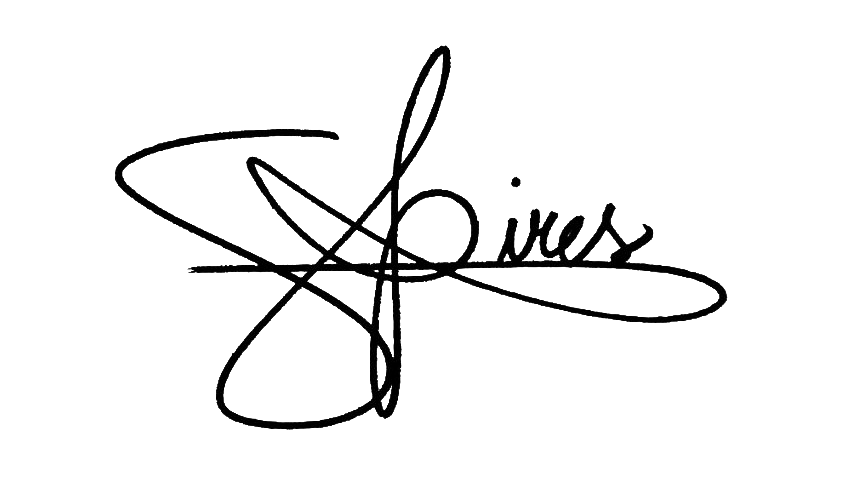

PARABÉNS!
Você está prestes a mudar completamente sua maneira de aprender inglês. Prepare-se, porque nos próximos três meses você terá uma experiência de imersão na língua inglesa como jamais vivenciou antes.
E o melhor é que essa será uma prática de aprendizagem 100% personalizável, de acordo com os seus interesses e necessidades e respeitando o seu nível.
Espero que você aproveite o processo, pois sua vida poliglota está apenas começando.
Um abraço poliglota,

Geovani Pires
Fundador da Creatus Polyglot School
Contrato de Compromisso
ASSINATURA
"Se você pensa que pode ou se pensa que não pode, você está certo."
- Henry Ford
Descubra seu Nível
Se você não sabe seu nível de inglês, não tem problema. Clique no botão abaixo para fazer o teste.
Mas atenção! Esse teste não corresponde 100% ao seu nível de conhecimento da língua, por isso é importante que você o use apenas como base geral do seu desempenho linguístico, ok?
Hora de Refletir
Nas páginas seguintes, você irá organizar as atividades que realiza durante a semana e vai encontrar uma série de perguntas que irão te guiar na definição da sua prática de estudos.
É extremamente importante que você responda a essas perguntas com a total sinceridade; afinal, a pessoa mais beneficiada pelos resultados alcançados a partir desses estudos será você.
Reflita bastante e não tenha pressa para encontrar suas respostas. O importante é que elas estejam de acordo com a sua realidade.
Sua Rotina
Coloque aqui todas as atividades que você faz durante a semana (incluindo momentos de lazer e/ou hobbies). Acrescente o tempo médio para executar cada uma delas. Coloque tudo que vier à mente, sem filtro. Não esqueça de adicionar o inglês também.
Diagnóstico
Suas Prioridades
Minhas prioridades para os próximos meses são:
Obs.: Lembre-se de colocar o estudo da língua inglesa em uma boa posição na sua lista.
Objetivo e Metas
Para isso vou me dedicar por dia, dia(s) na semana.
Sugestões de Tarefas
Aqui estão algumas ideias do que você pode fazer nos seus dias de estudo. Escolha as que mais combinam com você!
🗣️ Oralidade
| Clubes de conversação: encontre algum clube de conversação em inglês que seja do seu nível e com assuntos do seu interesse para praticar suas habilidades de conversação. | 🎧 ✍🏼 |
| Trava-línguas: pratique sua dicção e aumente seu vocabulário por meio de trava-línguas em inglês. Se necessário, procure a pronúncia do trava-língua. | 📖 🎧 |
| Bate-papo com nativos: pratique suas habilidades de conversação com nativos da língua inglesa e aproveite para fazer amizades no exterior, além de conhecer novos aspectos culturais e quebrar estereótipos. Não esqueça de anotar frases e expressões que você pode utilizar no seu dia a dia. | 🎧 ✍🏼 |
| Teatro solitário: assista, de forma legendada (ou sem legenda, se preferir), a algum filme ou a um episódio de uma série. Leia os diálogos e interprete as falas como se fosse um/a ator/atriz. Isso ajuda a praticar a entonação e ritmo de fala. | 🎧 📖 |
| Simulação de diálogo: fale em voz alta sobre suas atividades, pensamentos e experiências do dia. Isso ajuda a melhorar a sua fluência e pronúncia. | |
| Apresentações imaginárias: escolha um tópico que te interesse e faça uma apresentação imaginária curta sobre ele. Fale sobre o assunto como se estivesse conversando com um amigo. | |
| Exprimindo opinião: assista a um vídeo interessante ou ouça um podcast em língua inglesa. Depois, use seu vocabulário para comentar sobre o que você assistiu ou ouviu, expressando suas opiniões e pontos de vista. | 🎧 |
| Conversa com IA: mude o idioma do seu celular para o inglês e converse com o Google/Alexa: faça perguntas e interaja com essas AI produzindo muitas conversas. | 🎧 |
Escuta
| Músicas: selecione uma música, em inglês, que você gosta e tente entender sem acompanhar com a letra. Faça isso duas vezes. Depois, acompanhe com a letra para verificar o quanto entendeu e anote as frases/expressões que achar necessário. | 📖 ✍🏼 |
| Vídeos: procure no Youtube algum vídeo curto sobre um tema de seu interesse e procure entender o máximo que conseguir. Na segunda tentativa, ative a legenda em inglês e tente aumentar o seu entendimento. | 📖 |
| Podcast: assista a um vídeo interessante ou ouça um podcast na língua inglesa. Depois, comente sobre o que você assistiu ou ouviu, expressando suas opiniões e pontos de vista por meio da fala ou textos curtos. | 🗣️ ✍🏼 |
| Áudio-texto: escute áudios sobre temas da atualidade do seu interesse. Anote expressões e/ou vocabulário importantes. Crie situações para utilizar, no seu dia a dia, as expressões e/ou vocabulário aprendidos. | 🗣️ ✍🏼 |
| Piadas: peça para o Google/Alexa te contar uma piada e preste atenção para tentar compreender o humor. Isso vai te ajudar a praticar suas habilidades de compreensão oral e aumentar seu vocabulário. | |
| Você está com sorte: jogue com o Google o jogo "Are you feeling lucky?" e pratique sua compreensão oral e teste seus conhecimentos sobre acontecimentos e fatos do mundo. | 🗣️ |
| Rádio: escolha uma rádio para ouvir as notícias do dia/semana. Se precisar, grave a voz do locutor falando para escutar novamente outras vezes e reforçar a sua escuta com o mesmo áudio. |
Escrita
| Música: pratique seu vocabulário e sua ortografia com sua música preferida. Você pode anotar nos seus flashcards as expressões e frases que ainda não conhece para praticar depois. | 🎧 |
| Diário: escreva sobre algo importante que aconteceu recentemente com você ou com algum amigo próximo. Você também pode escrever sobre o seu dia de hoje ou sobre os momentos mais marcantes da sua semana. | |
| Resenhas de livros e filmes: escreva resenhas detalhadas sobre o último livro que você leu ou filme que assistiu. | |
| Descrição de imagens: escolha uma imagem, fotografia ou ilustração e escreva uma descrição detalhada. Isso ajuda a melhorar a sua habilidade de descrever visualmente objetos e cenários. | |
| Textos opinativos ou descritivos: escreva pequenos parágrafos/textos opinativos ou descritivos sobre tópicos polêmicos ou da atualidade. | 🗣️ |
| Blog pessoal: crie um blog pessoal ou um documento online no qual você possa compartilhar suas opiniões, experiências e interesses. | |
| Confessionário: escreva sobre as maiores dificuldades que você está enfrentando nos seus estudos de idioma até o momento. | |
| Conquista: escreva sobre suas conquistas na língua inglesa até agora. | |
| Motivações: relate as suas principais motivações para continuar a aprender inglês. | 🗣️ |
Leitura
| Textos informativos: escolha um texto de seu interesse e leia-o para aumentar seu vocabulário. As expressões novas você pode anotar em flashcards para revisar depois. | 🎧 |
| Letras de música: selecione uma de suas músicas preferidas e escute-a com a letra. Procure entender a música e anote as expressões que você pode utilizar no seu dia a dia. | 🎧 🗣️ ✍🏼 |
| Livros: escolha um livro para ler. Se você for iniciante, escolha livros mais infantis ou infanto-juvenis, pois eles apresentam vocabulário básico e intermediário. | ✍🏼 |
| Temas específicos: leia o texto de um tema do seu interesse. Fale, durante 120 segundos, o que entendeu sobre ele. Use o vocabulário que você já conhece e que também aprendeu no texto. | 🗣️ |
| Notícias diárias: escolha um jornal ou site de notícias na língua estrangeira e leia um artigo diferente todos os dias. | |
| "Clube" de leitura individual: crie seu próprio "clube de leitura" pessoal. Leia um livro ou um conjunto de capítulos e depois escreva resumos, análises e reflexões sobre o que leu. | ✍🏼 |
| Blogs e fóruns: explore blogs e fóruns online na língua estrangeira sobre tópicos que lhe interessam. Leia os posts e participe das discussões. | ✍🏼 |
| Contos curtos: busque por contos curtos ou histórias breves escritos na língua estrangeira. A leitura de contos é uma ótima maneira de aprimorar a compreensão de narrativas. |
Revisão de Vocabulário
| Palavras em contexto: escolha três expressões novas vistas durante a semana e imagine três contextos diferentes para utilizar cada expressão. Pratique esses contextos em voz alta. | 🗣️ |
| Explicação: explique, em poucas palavras e de forma simples, o significado de cinco palavras/expressões/ideias aprendidas durante a semana. | 🗣️ |
| Situações: crie três situações/contextos diferentes para praticar em voz alta pelo menos cinco palavras/expressões que você aprendeu durante a semana. | 🗣️ |
| Histórias curtas: por meio da criação de histórias, pratique, em voz alta, o vocabulário que você aprendeu durante a semana. | 🗣️ |
| Situações curtas: selecione algumas expressões que você precisa revisar/praticar e crie contextos para elas por meio de histórias/situações curtas que você pode usar no dia a dia. | 🗣️ |
| Diálogos: escolha algumas expressões aprendidas durante a semana e crie diálogos ou pequenas conversas imaginárias que envolvam essas palavras. | 🗣️ |
Estruturas da Língua
| Redes sociais: assista a vídeos curtos (reels/tiktok) explicando conceitos ou regras gramaticais da língua inglesa sobre os quais você gostaria de aprofundar seu conhecimento. | 🎧 |
| Vídeos do YouTube: assista a um vídeo explicando alguma estrutura ou curiosidade gramatical de forma rápida e simples. Depois, crie diferentes exemplos em seus flashcards. | 🎧 🗣️ |
| Livros: analise livros focados no ensino da estrutura gramatical da língua e, por meio da criação de frases relevantes para situações do seu cotidiano, pratique as regras estudadas. | 📖 🗣️ |
| Guias: consulte guias rápidos de uso da língua (principalmente guias de viagem) e veja a aplicação prática de estruturas simples e úteis da língua. | 📖 🗣️ |
Menu Principal
Seus 91 Dias
Escolha o dia para estudar:
meu progresso
0
Dias estudados
0
Palavras novas
Empenho Geral
Habilidades
Evolução de Vocabulário
Foco nas Habilidades
Dia #1 -
TAREFA:
VOCABULÁRIO:
VERIFICADOR DIÁRIO
Para estudar, hoje, eu me empenhei